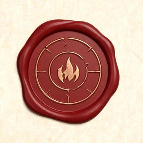

KP 跑团工作台
残火纪 · 烬中寻火
—
密度
开团
便签
备份
文件夹
总 览
总览看板
工作台功能
人物卡
NPC 图鉴
地区场景
战役日志
怪物图鉴
规则速查
背景城设
关系网
标签
地图
临场战斗
统计分析
工作台 AI 功能
AI 助手
AI 设定
AI 配置
记录润色
原始文本
骰娘功能
连 QQ 骰娘
本地掷骰
骰娘工作台
骰娘 AI 设置
AI 功能开关
群聊 AI 行为
表情包库
设置
偏好设置
数据管家
帮助中心
更新公告
运行记录
AI 对话
折叠侧栏
加载中…
随手便签
任意界面随时记一句；团后点右侧按钮一键归档为「日志 / 伏笔 / NPC」。Ctrl+Enter 记下，Esc 关闭。
关闭
全部→日志
记下
AI 处理中
请勿重复点击，完成后自动关闭
✕ 取消任务
清空排队
松开以导入文件